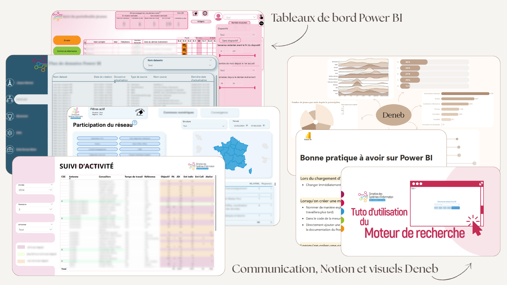
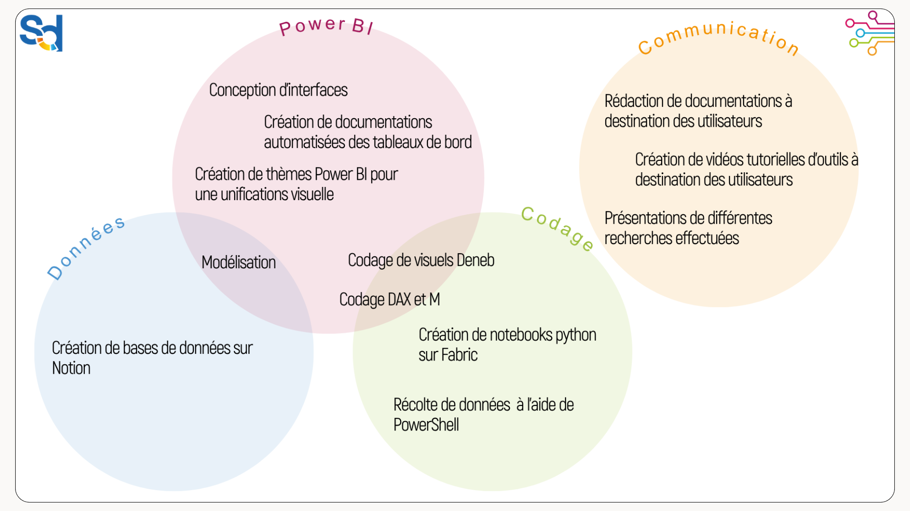

Recherche un stage de 16 à 22 semaines · à partir du 15 mars 2027
Concevoir des outils en plaçant l'utilisateur au centre de ma réflexion.
Étudiante en deuxième année de cycle ingénieur à CY Tech, diplômée d'un BUT Sciences des données. Je travaille l'analyse de données, l'informatique décisionnelle, l'intelligence artificielle et le développement web, de la compréhension du besoin jusqu'à la mise en production.

Parcours
Trois expériences dans la même structure, un diplôme obtenu, et une spécialisation en cours.
-
2022 → 2025BUT Sciences des données Parcours Visualisation, Conception d'Outils Décisionnels · IUT des Pays de l'Adour
-
avr. → juin 2024Stage, analyste décisionnelle Conception de tableaux de bord
-
août 2024 → août 2025Alternance, experte décisionnelle Conception, automatisation et documentation d'outils décisionnels
-
depuis sept. 2025Cycle ingénieur en informatique Génie des systèmes d'information, orientation sciences des données et intelligence artificielle · CY Tech
-
juin → août 2026Stage ingénieure Intelligence artificielle et développement web
-
15 mars 2027Stage de 16 à 22 semaines à l'international Conception d'outils décisionnels, développement web ou analyse de données
Compétences
Acquises en formation, éprouvées en entreprise.
Data & intelligence artificielle
Python, pandas, Jupyter, modèles de langage, prompt engineering, Hugging Face, CamemBERT, embeddings, apprentissage profond, statistiques
Décisionnel & tableaux de bord
Power BI, DAX, Power Query (M), Deneb / Vega-Lite, Microsoft Fabric, Qlik Sense, QlikView, Tableau
Développement
React, React Router, TypeScript, JavaScript, HTML / CSS, Java, JavaFX, C, PHP, Strapi, Zod, Vitest
Données
SQL, PostgreSQL, MySQL, modélisation, ETL, entrepôts de données, data mining, Talend, Access, Excel, VBA
Outils & méthodes
Git, GitHub, Docker, Coolify, PowerShell, Jira, Figma, Notion, Canva, méthodes agiles, tests utilisateurs, documentation
Langues
- Français Langue maternelle
- Arabe marocain Courant
- Anglais A2 – B1
Projets
Trois projets représentatifs, puis l'ensemble de mes travaux professionnels et académiques. Cliquez sur une fiche pour en lire le détail.
À la une
Projets professionnels · stage et alternance
Projets académiques · cycle ingénieur
Projets académiques · BUT Sciences des données
Retours
Les retours de mes collègues et de mes encadrants sur mon travail. Le post complet et ses commentaires sont accessibles sur LinkedIn.

Contact
Je reste disponible pour tout échange, en français ou en arabe marocain.
Mobile à l'international
à partir du 15 mars 2027